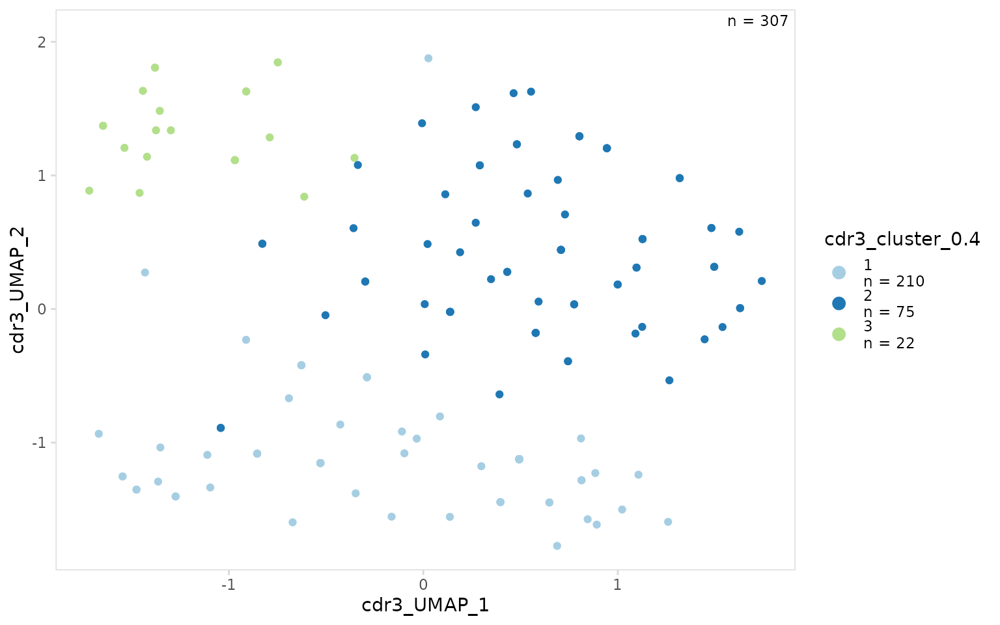
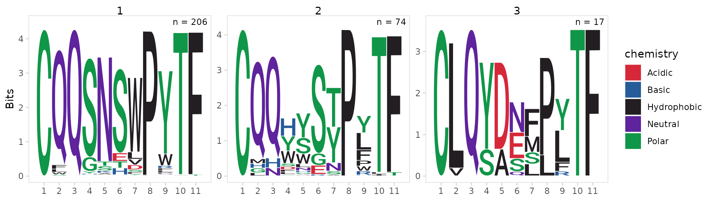
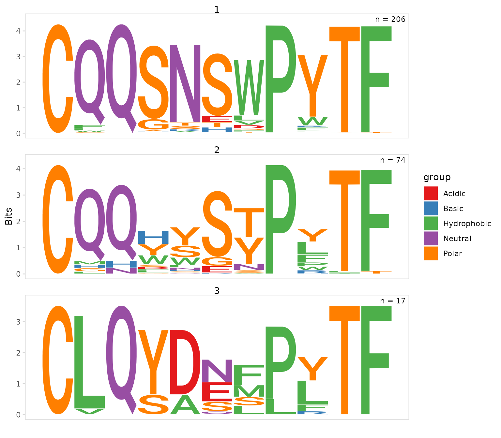

This vignette provides detailed examples for clustering cells based on CDR3 sequences. For the examples shown below, we use data for splenocytes from BL6 and MD4 mice collected using the 10X Genomics scRNA-seq platform. MD4 B cells are monoclonal and specifically bind hen egg lysozyme.
library(djvdj)
library(Seurat)
library(ggplot2)
library(RColorBrewer)
# Load GEX data
data_dir <- system.file("extdata/splen", package = "djvdj")
gex_dirs <- c(
BL6 = file.path(data_dir, "BL6_GEX/filtered_feature_bc_matrix"),
MD4 = file.path(data_dir, "MD4_GEX/filtered_feature_bc_matrix")
)
so <- gex_dirs |>
Read10X() |>
CreateSeuratObject() |>
AddMetaData(splen_meta)
# Add V(D)J data to object
vdj_dirs <- c(
BL6 = system.file("extdata/splen/BL6_BCR", package = "djvdj"),
MD4 = system.file("extdata/splen/MD4_BCR", package = "djvdj")
)
so <- so |>
import_vdj(vdj_dirs, define_clonotypes = "cdr3_gene")Clustering sequences
The cluster_sequences() function can be used to cluster
cells based on CDR3 sequences, or any other sequences present in the
object. Provide the meta.data column containing sequences to the
data_col argument. By default if a cell has multiple
chains, the sequences will be concatenated.
By default, distances are calculated for amino acid sequences using
the BLOSUM62
substitution matrix, which is based on observed amino acid frequencies
and substitution probabilities. The calculated distances are then used
to cluster cells using either the Louvain or Leiden clustering
algorithms. The coarseness of the clusters an be adjusted using the
resolution argument with smaller values returning fewer
clusters.
In this example we are clustering cells based on the CDR3 amino acid sequence.
so_vdj <- so |>
cluster_sequences(
data_col = "cdr3",
method = "louvain", # clustering method
dist_method = "BLOSUM62", # method for calculating sequence distances
resolution = 0.5
)Use the chain argument to cluster using only sequences
from a specific chain.
so_vdj <- so |>
cluster_sequences(
data_col = "cdr3",
chain = "IGK"
)By default the Uniform Manifold Approximation and Projection (UMAP)
dimensional reduction method will be performed and UMAP coordinates will
be added to the object. To skip this step, set the run_umap
argument to FALSE. This requires the uwot package to be
installed.
so_vdj <- so |>
cluster_sequences(
data_col = "cdr3",
chain = "IGK",
run_umap = FALSE
)To return clustering results for multiple resolutions, a vector can
be provided to the resolution argument.
set.seed(42)
so_vdj <- so |>
cluster_sequences(
data_col = "cdr3",
chain = "IGK",
resolution = c(0.4, 0.8, 1.6)
)Plotting clusters
Clustering results can be visualized on a UMAP projection using the
generic plotting function plot_scatter(). Colors can be
adjusted using the plot_colors argument.
This function will often generate a warning saying that rows with missing values were removed, this is expected since some cells do not have V(D)J data and will not have UMAP coordinates.
clrs <- setNames(brewer.pal(11, "Paired"), 1:11)
so_vdj |>
plot_scatter(
x = "cdr3_UMAP_1",
y = "cdr3_UMAP_2",
data_col = "cdr3_cluster_0.4",
plot_colors = clrs
)
To visualize the proportion of BL6 and MD4 cells in each cluster we
can create a stacked bargraph using the plot_frequency()
function. MD4 cells are monoclonal and as expected these cells are found
almost exclusively in a single cluster.
so_vdj |>
plot_frequency(
data_col = "cdr3_cluster_0.4",
cluster_col = "sample",
plot_colors = clrs
)
CDR3 motifs
Using the plot_motifs() function we can generate
sequence motifs for each cluster. We just need to provide the same
data_col and chain used for clustering. To
create a separate motif for each cluster, we also need to provide the
column containing cluster IDs to the cluster_col
argument.
As expected we see that most cells within the MD4 cluster have the exact same IGK CDR3 sequence.
so_vdj |>
plot_motifs(
data_col = "cdr3",
cluster_col = "cdr3_cluster_0.4",
chain = "IGK"
)
By default, sequences are aligned to the 5’ end and trimmed based on
the width parameter. Sequences can be aligned to the 3’ end
using the align_end parameter. Sequences longer than the
width cutoff are trimmed, sequences shorter than the width cutoff are
removed. By default the width cutoff is automatically selected for each
cluster to include at least 75% of sequences.
In this example we generate motifs for the last 11 amino acids of the CDR3.
so_vdj |>
plot_motifs(
data_col = "cdr3",
cluster_col = "cdr3_cluster_0.4",
chain = "IGK",
align_end = "3",
width = 11
)
Plot colors can be modified using the plot_colors
argument and the number of rows used to arrange panels can be adjusted
with the panel_nrow argument. Like most djvdj plotting
functions, plot_motifs() will return a ggplot2 object that
can be modified with other ggplot2 functions.
so_vdj |>
plot_motifs(
data_col = "cdr3",
cluster_col = "cdr3_cluster_0.4",
chain = "IGK",
plot_colors = brewer.pal(5, "Set1"),
panel_nrow = 4
) +
theme(
axis.text.x = element_blank(),
axis.ticks.x = element_blank()
)
Session info
#> R version 4.3.1 (2023-06-16)
#> Platform: x86_64-pc-linux-gnu (64-bit)
#> Running under: Ubuntu 22.04.3 LTS
#>
#> Matrix products: default
#> BLAS: /usr/lib/x86_64-linux-gnu/openblas-pthread/libblas.so.3
#> LAPACK: /usr/lib/x86_64-linux-gnu/openblas-pthread/libopenblasp-r0.3.20.so; LAPACK version 3.10.0
#>
#> locale:
#> [1] LC_CTYPE=C.UTF-8 LC_NUMERIC=C LC_TIME=C.UTF-8
#> [4] LC_COLLATE=C.UTF-8 LC_MONETARY=C.UTF-8 LC_MESSAGES=C.UTF-8
#> [7] LC_PAPER=C.UTF-8 LC_NAME=C LC_ADDRESS=C
#> [10] LC_TELEPHONE=C LC_MEASUREMENT=C.UTF-8 LC_IDENTIFICATION=C
#>
#> time zone: UTC
#> tzcode source: system (glibc)
#>
#> attached base packages:
#> [1] stats graphics grDevices utils datasets methods base
#>
#> other attached packages:
#> [1] RColorBrewer_1.1-3 ggplot2_3.4.4 SeuratObject_4.1.4
#> [4] Seurat_4.4.0 djvdj_0.1.0
#>
#> loaded via a namespace (and not attached):
#> [1] jsonlite_1.8.7 magrittr_2.0.3
#> [3] spatstat.utils_3.0-3 farver_2.1.1
#> [5] rmarkdown_2.25 zlibbioc_1.46.0
#> [7] fs_1.6.3 ragg_1.2.6
#> [9] vctrs_0.6.4 ROCR_1.0-11
#> [11] memoise_2.0.1 spatstat.explore_3.2-5
#> [13] RCurl_1.98-1.12 htmltools_0.5.6.1
#> [15] sass_0.4.7 sctransform_0.4.1
#> [17] parallelly_1.36.0 KernSmooth_2.23-21
#> [19] bslib_0.5.1 htmlwidgets_1.6.2
#> [21] desc_1.4.2 ica_1.0-3
#> [23] plyr_1.8.9 plotly_4.10.3
#> [25] zoo_1.8-12 cachem_1.0.8
#> [27] igraph_1.5.1 mime_0.12
#> [29] lifecycle_1.0.3 pkgconfig_2.0.3
#> [31] Matrix_1.6-1.1 R6_2.5.1
#> [33] fastmap_1.1.1 GenomeInfoDbData_1.2.10
#> [35] fitdistrplus_1.1-11 future_1.33.0
#> [37] shiny_1.7.5.1 digest_0.6.33
#> [39] colorspace_2.1-0 S4Vectors_0.38.2
#> [41] patchwork_1.1.3 rprojroot_2.0.3
#> [43] tensor_1.5 irlba_2.3.5.1
#> [45] textshaping_0.3.7 labeling_0.4.3
#> [47] progressr_0.14.0 fansi_1.0.5
#> [49] spatstat.sparse_3.0-2 httr_1.4.7
#> [51] polyclip_1.10-6 abind_1.4-5
#> [53] compiler_4.3.1 bit64_4.0.5
#> [55] withr_2.5.1 MASS_7.3-60
#> [57] tools_4.3.1 lmtest_0.9-40
#> [59] httpuv_1.6.12 ggseqlogo_0.1
#> [61] future.apply_1.11.0 goftest_1.2-3
#> [63] glue_1.6.2 dbscan_1.1-11
#> [65] nlme_3.1-162 promises_1.2.1
#> [67] grid_4.3.1 Rtsne_0.16
#> [69] cluster_2.1.4 reshape2_1.4.4
#> [71] generics_0.1.3 gtable_0.3.4
#> [73] spatstat.data_3.0-1 tzdb_0.4.0
#> [75] tidyr_1.3.0 data.table_1.14.8
#> [77] hms_1.1.3 XVector_0.40.0
#> [79] sp_2.1-1 utf8_1.2.4
#> [81] BiocGenerics_0.46.0 spatstat.geom_3.2-7
#> [83] RcppAnnoy_0.0.21 ggrepel_0.9.4
#> [85] RANN_2.6.1 pillar_1.9.0
#> [87] stringr_1.5.0 vroom_1.6.4
#> [89] later_1.3.1 splines_4.3.1
#> [91] dplyr_1.1.3 lattice_0.21-8
#> [93] bit_4.0.5 survival_3.5-5
#> [95] deldir_1.0-9 tidyselect_1.2.0
#> [97] Biostrings_2.68.1 miniUI_0.1.1.1
#> [99] pbapply_1.7-2 knitr_1.44
#> [101] gridExtra_2.3 IRanges_2.34.1
#> [103] scattermore_1.2 stats4_4.3.1
#> [105] xfun_0.40 matrixStats_1.0.0
#> [107] stringi_1.7.12 lazyeval_0.2.2
#> [109] yaml_2.3.7 evaluate_0.22
#> [111] codetools_0.2-19 tibble_3.2.1
#> [113] cli_3.6.1 uwot_0.1.16
#> [115] xtable_1.8-4 reticulate_1.34.0
#> [117] systemfonts_1.0.5 munsell_0.5.0
#> [119] jquerylib_0.1.4 GenomeInfoDb_1.36.4
#> [121] Rcpp_1.0.11 globals_0.16.2
#> [123] spatstat.random_3.2-1 png_0.1-8
#> [125] parallel_4.3.1 ellipsis_0.3.2
#> [127] pkgdown_2.0.7 readr_2.1.4
#> [129] bitops_1.0-7 listenv_0.9.0
#> [131] viridisLite_0.4.2 scales_1.2.1
#> [133] ggridges_0.5.4 crayon_1.5.2
#> [135] leiden_0.4.3 purrr_1.0.2
#> [137] rlang_1.1.1 cowplot_1.1.1